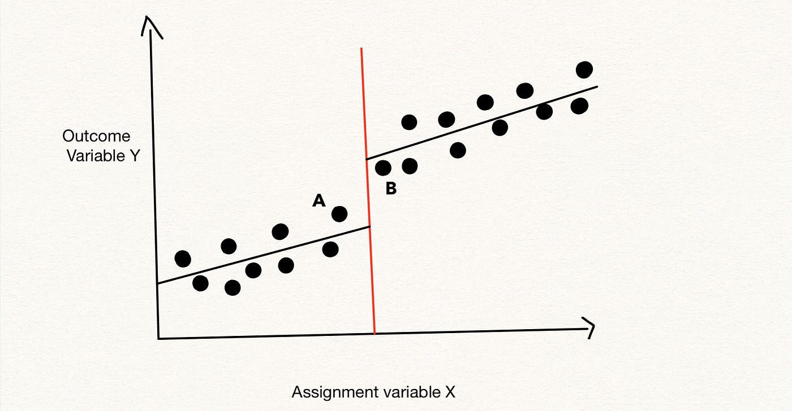
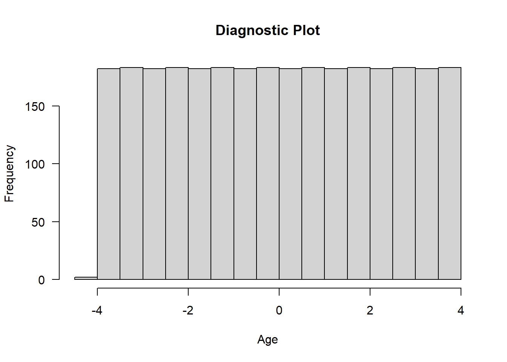
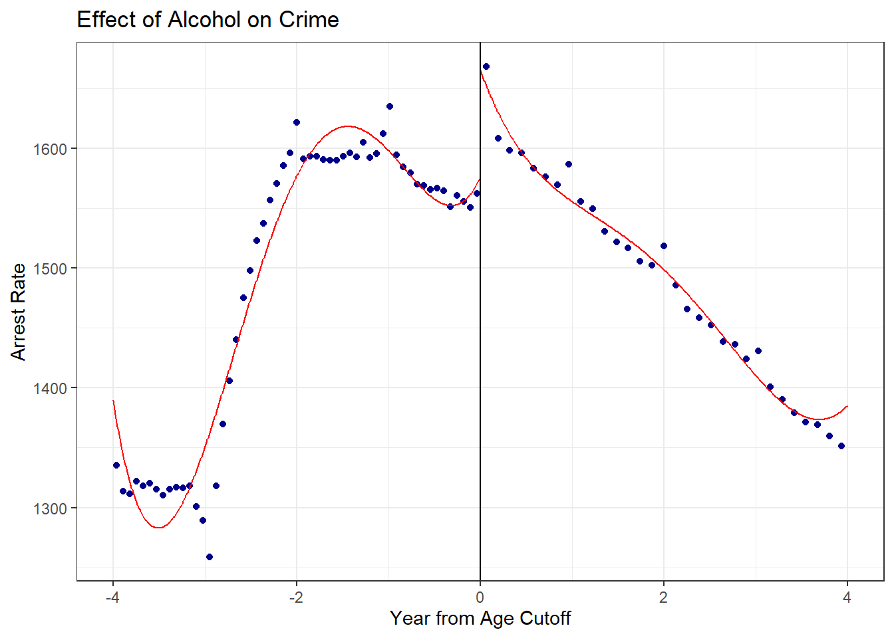
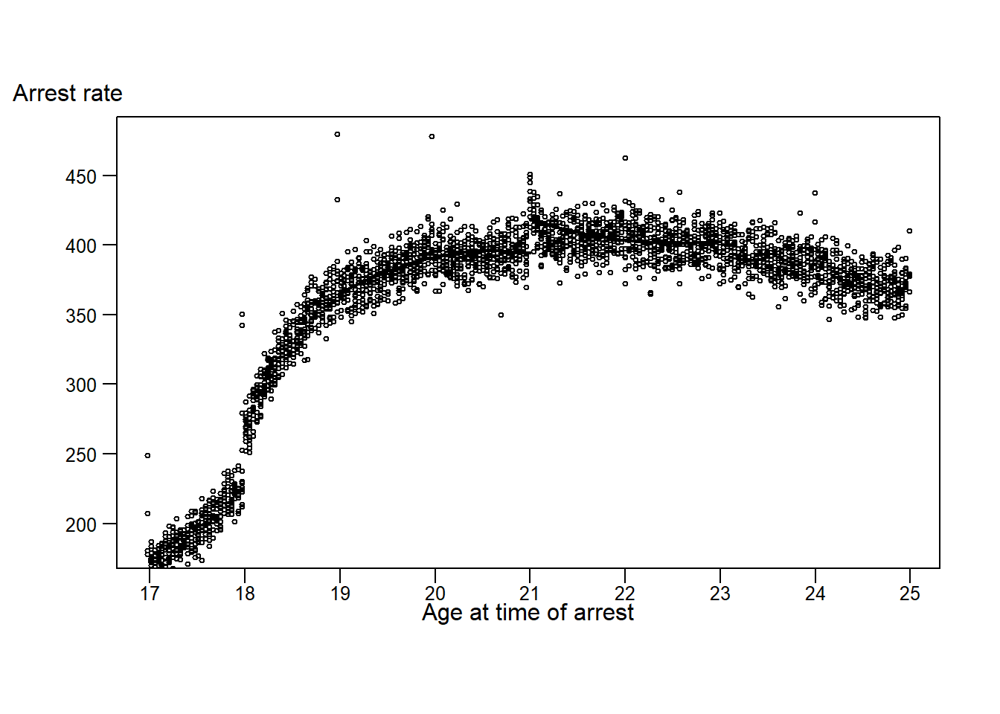
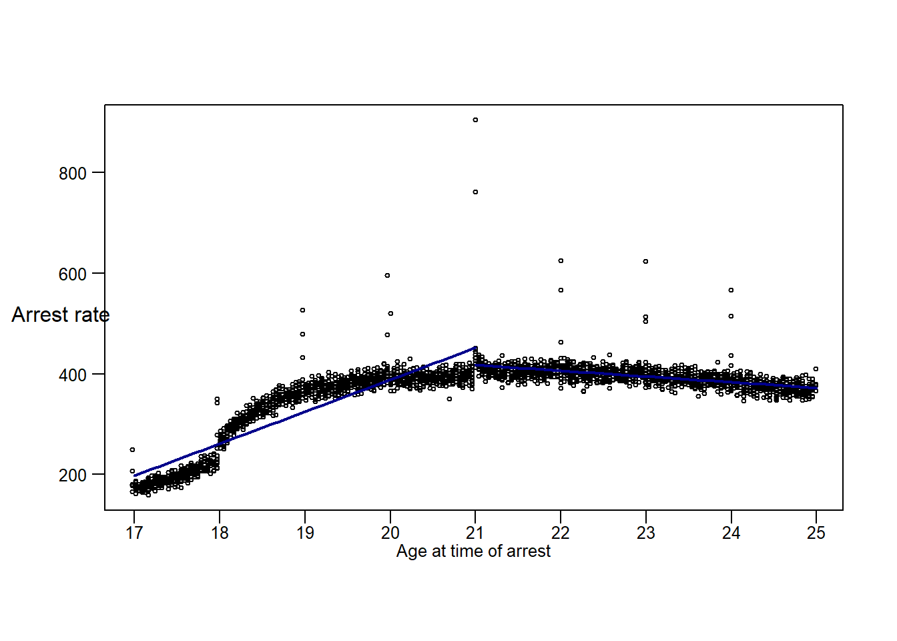

8 Lab VII: Regression Discontinuity Designs

8.0.1 Preparation
## Packages
require(knitr)
require(haven)
require(dplyr)
library(rdrobust)
# Load data: data saved as object named "dta"
load("~/GOVT8002/Spring 2023/Lab VIII/Ch11_Lab_AlcoholCrime.RData")Carpenter and Dobkin (2015) analyzes the relationship between alcohol and crime using a regression discontinuity design.
In this lab we will replicate the results and then explore different specifications. As you will see, some reasonable alternative specifications yield quite different results. The goal here will be to see if we can make any progress in explaining why the results vary as we vary the specification.
From the codebook: “The individual level arrest records are collapsed into arrest counts by age in days for each crime type in the SAS program”P01 Estimate Age Profile of Crime Rates.sas”. This program uses populations estimated from the census in “P00 Estimate Population Denominators.sas” to compute arrest rates per 10,000.”
The main variables are
- all_r: number of arrrests across all categories. Our main dependent variable. Arrest data is also broken down for violent_r, property_r, ill_drugs_r and alcohol_r
- post a dumm variable indicating the individual is over 21 years of age
- linear: the number of years from being age 21 (that is, linear = 1.0 indicates 22 year olds. Negative values means the individual is under 21 and positive values indicate the individual is over than 21.
- square: the squared value of linear
- linear_post: interaction of linear and post
- square_post: interaction of square and post
- birthday dummies: e.g., birthday_19 is a dummy for a person’s 19th birthday and birthday_19_1 is a dummy for the day after a person’s 19th birthday. Use this code in your formula: + birthday_19 + birthday_19_1 + birthday_20 + birthday_20_1 + birthday_21 + birthday_21_1 + birthday_22 + birthday_22_1 + birthday_23 + birthday_23_1
See Carpenter, Christopher and Carlos Dobkin. 2015. The Minimum Legal Drinking Age and Crime. The Review of Economics and Statistics. 97:2, 521-524.
8.1 Replicate the main result using the specification for Table 1. In this model, the RD allows for differential quadratic models above and below the threshold and also has dummy variables for birthdays. The data is limited to observations within 2 years of 21.
## Basic RD model
rd_basic <- lm(all_r ~ post + linear, data=dta[abs(dta$linear) <= 2, ])
summary(rd_basic)##
## Call:
## lm(formula = all_r ~ post + linear, data = dta[abs(dta$linear) <=
## 2, ])
##
## Residuals:
## Min 1Q Median 3Q Max
## -89.9 -22.3 -2.3 16.9 695.7
##
## Coefficients:
## Estimate Std. Error t value Pr(>|t|)
## (Intercept) 1534.91 2.54 605.0 <2e-16 ***
## post 76.89 4.54 16.9 <2e-16 ***
## linear -48.79 1.96 -24.9 <2e-16 ***
## ---
## Signif. codes: 0 '***' 0.001 '**' 0.01 '*' 0.05 '.' 0.1 ' ' 1
##
## Residual standard error: 43 on 1458 degrees of freedom
## Multiple R-squared: 0.325, Adjusted R-squared: 0.324
## F-statistic: 351 on 2 and 1458 DF, p-value: <2e-16## Differing Slopes
rd_basic <- lm(all_r ~ post*linear, data=dta[abs(dta$linear) <= 2, ])
summary(rd_basic)##
## Call:
## lm(formula = all_r ~ post * linear, data = dta[abs(dta$linear) <=
## 2, ])
##
## Residuals:
## Min 1Q Median 3Q Max
## -89.8 -19.5 -2.8 14.9 671.8
##
## Coefficients:
## Estimate Std. Error t value Pr(>|t|)
## (Intercept) 1559.03 3.04 512.29 <2e-16 ***
## post 76.76 4.30 17.86 <2e-16 ***
## linear -24.71 2.63 -9.39 <2e-16 ***
## post:linear -48.06 3.72 -12.92 <2e-16 ***
## ---
## Signif. codes: 0 '***' 0.001 '**' 0.01 '*' 0.05 '.' 0.1 ' ' 1
##
## Residual standard error: 41 on 1457 degrees of freedom
## Multiple R-squared: 0.394, Adjusted R-squared: 0.393
## F-statistic: 316 on 3 and 1457 DF, p-value: <2e-16## Model with covariates and vary
rd_replicate <- lm(all_r ~ post + linear + square + linear_post + square_post + birthday_19 + birthday_20 + birthday_20_1 + birthday_21 + birthday_21_1 + birthday_22 + birthday_22_1, data=dta[abs(dta$linear) <= 2, ])
summary(rd_replicate)##
## Call:
## lm(formula = all_r ~ post + linear + square + linear_post + square_post +
## birthday_19 + birthday_20 + birthday_20_1 + birthday_21 +
## birthday_21_1 + birthday_22 + birthday_22_1, data = dta[abs(dta$linear) <=
## 2, ])
##
## Residuals:
## Min 1Q Median 3Q Max
## -83.0 -17.6 -0.8 15.9 216.1
##
## Coefficients:
## Estimate Std. Error t value Pr(>|t|)
## (Intercept) 1543.07 2.92 527.74 < 2e-16 ***
## post 91.21 4.15 22.00 < 2e-16 ***
## linear -71.06 6.76 -10.51 < 2e-16 ***
## square -23.73 3.27 -7.25 6.9e-13 ***
## linear_post -16.26 9.57 -1.70 0.09 .
## square_post 33.67 4.63 7.27 5.8e-13 ***
## birthday_19 287.42 26.40 10.89 < 2e-16 ***
## birthday_20 408.59 26.27 15.55 < 2e-16 ***
## birthday_20_1 217.60 26.27 8.28 2.7e-16 ***
## birthday_21 633.83 26.40 24.01 < 2e-16 ***
## birthday_21_1 673.30 26.40 25.51 < 2e-16 ***
## birthday_22 347.87 26.27 13.24 < 2e-16 ***
## birthday_22_1 382.07 26.27 14.54 < 2e-16 ***
## ---
## Signif. codes: 0 '***' 0.001 '**' 0.01 '*' 0.05 '.' 0.1 ' ' 1
##
## Residual standard error: 26 on 1448 degrees of freedom
## Multiple R-squared: 0.754, Adjusted R-squared: 0.752
## F-statistic: 371 on 12 and 1448 DF, p-value: <2e-16## Diagnostic plot
hist(dta$linear, main = "Diagnostic Plot", xlab = "Age", las=1)
8.2 Estimate a series of models with slightly different specifications. First, try the above specification with only linear age variable, first fixing slope to be the same above and below the threshhold and then allowing slope to vary above and below the threshhold.
## Additional Models
RD.1 <- lm(all_r ~ post + linear + birthday_19 + birthday_20 + birthday_20_1 + birthday_21 + birthday_21_1 + birthday_22 + birthday_22_1, data=dta[abs(dta$linear) <= 2, ])
summary(RD.1)##
## Call:
## lm(formula = all_r ~ post + linear + birthday_19 + birthday_20 +
## birthday_20_1 + birthday_21 + birthday_21_1 + birthday_22 +
## birthday_22_1, data = dta[abs(dta$linear) <= 2, ])
##
## Residuals:
## Min 1Q Median 3Q Max
## -86.03 -20.19 -0.52 18.63 200.85
##
## Coefficients:
## Estimate Std. Error t value Pr(>|t|)
## (Intercept) 1537.00 1.74 885.50 < 2e-16 ***
## post 68.66 3.11 22.09 < 2e-16 ***
## linear -45.49 1.34 -33.84 < 2e-16 ***
## birthday_19 249.71 29.65 8.42 < 2e-16 ***
## birthday_20 416.50 29.62 14.06 < 2e-16 ***
## birthday_20_1 225.57 29.62 7.62 4.7e-14 ***
## birthday_21 662.46 29.65 22.34 < 2e-16 ***
## birthday_21_1 701.82 29.65 23.67 < 2e-16 ***
## birthday_22 344.62 29.62 11.63 < 2e-16 ***
## birthday_22_1 378.75 29.62 12.79 < 2e-16 ***
## ---
## Signif. codes: 0 '***' 0.001 '**' 0.01 '*' 0.05 '.' 0.1 ' ' 1
##
## Residual standard error: 30 on 1451 degrees of freedom
## Multiple R-squared: 0.687, Adjusted R-squared: 0.685
## F-statistic: 353 on 9 and 1451 DF, p-value: <2e-16RD.2 <- lm(all_r ~ post + linear + linear_post + birthday_19 + birthday_20 + birthday_20_1 + birthday_21 + birthday_21_1 + birthday_22 + birthday_22_1, data=dta[abs(dta$linear) <= 2, ])
summary(RD.2)##
## Call:
## lm(formula = all_r ~ post + linear + linear_post + birthday_19 +
## birthday_20 + birthday_20_1 + birthday_21 + birthday_21_1 +
## birthday_22 + birthday_22_1, data = dta[abs(dta$linear) <=
## 2, ])
##
## Residuals:
## Min 1Q Median 3Q Max
## -85.70 -17.55 -0.79 15.90 222.68
##
## Coefficients:
## Estimate Std. Error t value Pr(>|t|)
## (Intercept) 1558.89 1.99 785.09 <2e-16 ***
## post 68.72 2.81 24.45 <2e-16 ***
## linear -23.60 1.72 -13.73 <2e-16 ***
## linear_post -43.78 2.43 -18.00 <2e-16 ***
## birthday_19 271.60 26.84 10.12 <2e-16 ***
## birthday_20 416.50 26.79 15.55 <2e-16 ***
## birthday_20_1 225.51 26.79 8.42 <2e-16 ***
## birthday_21 640.51 26.84 23.86 <2e-16 ***
## birthday_21_1 679.93 26.84 25.33 <2e-16 ***
## birthday_22 344.56 26.79 12.86 <2e-16 ***
## birthday_22_1 378.75 26.79 14.14 <2e-16 ***
## ---
## Signif. codes: 0 '***' 0.001 '**' 0.01 '*' 0.05 '.' 0.1 ' ' 1
##
## Residual standard error: 27 on 1450 degrees of freedom
## Multiple R-squared: 0.744, Adjusted R-squared: 0.742
## F-statistic: 421 on 10 and 1450 DF, p-value: <2e-168.3 Now see what happens when you use a different window sizes. Feel free to experiment (but only need to report one specification.)
## Different window sizes
RD.3 <- lm(all_r ~ post + linear + linear_post, data=dta[abs(dta$linear) <= 1, ])
summary(RD.3)##
## Call:
## lm(formula = all_r ~ post + linear + linear_post, data = dta[abs(dta$linear) <=
## 1, ])
##
## Residuals:
## Min 1Q Median 3Q Max
## -85.2 -21.4 -3.2 15.4 665.3
##
## Coefficients:
## Estimate Std. Error t value Pr(>|t|)
## (Intercept) 1543.85 4.97 310.46 < 2e-16 ***
## post 98.44 7.01 14.04 < 2e-16 ***
## linear -53.88 8.60 -6.27 6.2e-10 ***
## linear_post -33.66 12.13 -2.77 0.0057 **
## ---
## Signif. codes: 0 '***' 0.001 '**' 0.01 '*' 0.05 '.' 0.1 ' ' 1
##
## Residual standard error: 47 on 727 degrees of freedom
## Multiple R-squared: 0.221, Adjusted R-squared: 0.218
## F-statistic: 68.7 on 3 and 727 DF, p-value: <2e-16RD.4 <- lm(all_r ~ post + linear + linear_post, data=dta[abs(dta$linear) <= 3, ])
summary(RD.4)##
## Call:
## lm(formula = all_r ~ post + linear + linear_post, data = dta[abs(dta$linear) <=
## 3, ])
##
## Residuals:
## Min 1Q Median 3Q Max
## -256.5 -26.5 1.3 30.7 671.7
##
## Coefficients:
## Estimate Std. Error t value Pr(>|t|)
## (Intercept) 1629.58 3.64 448.25 <2e-16 ***
## post 6.25 5.14 1.22 0.22
## linear 54.93 2.10 26.19 <2e-16 ***
## linear_post -127.40 2.96 -42.98 <2e-16 ***
## ---
## Signif. codes: 0 '***' 0.001 '**' 0.01 '*' 0.05 '.' 0.1 ' ' 1
##
## Residual standard error: 60 on 2187 degrees of freedom
## Multiple R-squared: 0.471, Adjusted R-squared: 0.47
## F-statistic: 648 on 3 and 2187 DF, p-value: <2e-168.4 To figure out what is going on, let’s create some figures. First, let’s re-create Figure 1 in the paper. I provide the code to create a binned graph for the alcohol arrest rate. Your task is to add another arrest category to the plot.
## With rdrobust
rdplot(dta$all_r , dta$linear, c=0, kernel = "triangular", x.label = "Year from Age Cutoff", y.label
= "Arrest Rate", title = "Effect of Alcohol on Crime", binselect = "es")
# The original paper used 2 week intervals for bins, using the following to
# generate a number indicating age in years grouped into 2 week intervals
dta$age_fortnight = 21 + (14*floor(dta$days_to_21/14))/365
# Create a variable placing each observation in a "bin"
dta$bin = rep(1:length(unique(dta$age_fortnight)), table(dta$age_fortnight))
# Use "window" to set how wide the window is above and below 21; e.g. window = 2
# limits years 19 to 23
window = 2
# Create a dataframe that contains average crime rates grouped by bin
# Use the dplyr package to simplify data organization
dta_bin <- dta %>%
select(days_to_21, all_r, property_r, age_fortnight, alcohol_r, bin) %>%
group_by(bin)
# Quadratic model with varying parameters below and above threshhold
# ALCOHOL ARREST RATES
Alc.RD.Replicate.left = lm(alcohol_r ~ linear + square, dta[dta$linear > -window & dta$linear <0, ])
summary(Alc.RD.Replicate.left)##
## Call:
## lm(formula = alcohol_r ~ linear + square, data = dta[dta$linear >
## -window & dta$linear < 0, ])
##
## Residuals:
## Min 1Q Median 3Q Max
## -45.57 -8.20 -1.26 7.19 204.45
##
## Coefficients:
## Estimate Std. Error t value Pr(>|t|)
## (Intercept) 394.19 1.67 236.50 < 2e-16 ***
## linear -8.54 3.85 -2.22 0.027 *
## square -11.46 1.86 -6.15 1.3e-09 ***
## ---
## Signif. codes: 0 '***' 0.001 '**' 0.01 '*' 0.05 '.' 0.1 ' ' 1
##
## Residual standard error: 15 on 726 degrees of freedom
## Multiple R-squared: 0.265, Adjusted R-squared: 0.263
## F-statistic: 131 on 2 and 726 DF, p-value: <2e-16Alc.RD.Replicate.right = lm(alcohol_r ~ linear + square, dta[dta$linear < window & dta$linear >0, ])
summary(Alc.RD.Replicate.right)##
## Call:
## lm(formula = alcohol_r ~ linear + square, data = dta[dta$linear <
## window & dta$linear > 0, ])
##
## Residuals:
## Min 1Q Median 3Q Max
## -38.9 -10.0 -0.8 7.2 486.1
##
## Coefficients:
## Estimate Std. Error t value Pr(>|t|)
## (Intercept) 418.34 2.68 156.34 < 2e-16 ***
## linear -22.03 6.18 -3.57 0.00039 ***
## square 7.14 2.99 2.39 0.01724 *
## ---
## Signif. codes: 0 '***' 0.001 '**' 0.01 '*' 0.05 '.' 0.1 ' ' 1
##
## Residual standard error: 24 on 726 degrees of freedom
## Multiple R-squared: 0.0409, Adjusted R-squared: 0.0382
## F-statistic: 15.5 on 2 and 726 DF, p-value: 2.65e-07# Quadratic model with varying parameters below and above threshhold
# PROPERTY ARREST RATES
Prop.RD.Replicate.left = lm(property_r ~ linear + square, dta[dta$linear > -window & dta$linear <0, ])
summary(Prop.RD.Replicate.left)##
## Call:
## lm(formula = property_r ~ linear + square, data = dta[dta$linear >
## -window & dta$linear < 0, ])
##
## Residuals:
## Min 1Q Median 3Q Max
## -28.50 -6.08 -0.02 5.92 28.63
##
## Coefficients:
## Estimate Std. Error t value Pr(>|t|)
## (Intercept) 224.35 1.01 222.52 < 2e-16 ***
## linear -30.71 2.33 -13.19 < 2e-16 ***
## square 8.66 1.13 7.68 5.1e-14 ***
## ---
## Signif. codes: 0 '***' 0.001 '**' 0.01 '*' 0.05 '.' 0.1 ' ' 1
##
## Residual standard error: 9.1 on 726 degrees of freedom
## Multiple R-squared: 0.905, Adjusted R-squared: 0.904
## F-statistic: 3.44e+03 on 2 and 726 DF, p-value: <2e-16Prop.RD.Replicate.right = lm(property_r ~ linear + square, dta[dta$linear < window & dta$linear >0, ])
summary(Prop.RD.Replicate.right)##
## Call:
## lm(formula = property_r ~ linear + square, data = dta[dta$linear <
## window & dta$linear > 0, ])
##
## Residuals:
## Min 1Q Median 3Q Max
## -22.56 -5.28 -0.03 4.94 25.22
##
## Coefficients:
## Estimate Std. Error t value Pr(>|t|)
## (Intercept) 229.351 0.861 266.44 < 2e-16 ***
## linear -29.618 1.988 -14.90 < 2e-16 ***
## square 3.668 0.962 3.81 0.00015 ***
## ---
## Signif. codes: 0 '***' 0.001 '**' 0.01 '*' 0.05 '.' 0.1 ' ' 1
##
## Residual standard error: 7.7 on 726 degrees of freedom
## Multiple R-squared: 0.737, Adjusted R-squared: 0.736
## F-statistic: 1.02e+03 on 2 and 726 DF, p-value: <2e-16# Create a # scatter plot
plot(dta_bin$age_fortnight, dta_bin$alcohol_r, type = "p", pch = 1, cex = 0.5, cex.main = 0.8, xlab = "", ylab = "", xaxt='n', yaxt='n', ylim = c(180, 480))
axis(2, las = 1, tick = T, cex.axis = .8, mgp = c(2,.7,0))
axis(1, tick = T, at= seq(17, 25, by=1), labels =seq(17, 25, by=1),cex.axis = .8, mgp = c(2,.3,0))
mtext("Arrest rate", las = 1, side = 2, at = 510, line = -0.2, cex = 1)
mtext("Age at time of arrest", side = 1, line = 1., cex = 1)
# Add fitted lines from "left" and "right" models
# ALCOHOL
points(seq(21 - window, 21, by = 0.1), coef(Alc.RD.Replicate.left)[1] + coef(Alc.RD.Replicate.left)[2]*seq(-window, 0, by = 0.1) +
coef(Alc.RD.Replicate.left)[3]*(seq(-window, 0, by = 0.1)^2), type = 'l', lwd = 2)
points(seq(21, 21 + window, by = 0.1), coef(Alc.RD.Replicate.right)[1] + coef(Alc.RD.Replicate.right)[2]*seq(0, window, by = 0.1) +
coef(Alc.RD.Replicate.right)[3]*(seq(0, window, by = 0.1)^2), type = 'l', lwd = 2)
8.5 Now create a figure based on a linear model. You can try different window sizes but need only report one. Do this for alcohol (and feel free to add other crimes, but not required.)
# Create a dataframe that contains average crime rates grouped by bin, limited to the
# window set by the window parameter
window = 4
library(dplyr)
# Linear model with varying slopes below and above threshold
# ALCOHOL ARREST RATES
Alc.RD.linear.left = lm(alcohol_r ~ linear, dta[dta$linear > -window & dta$linear <0, ])
summary(Alc.RD.linear.left)##
## Call:
## lm(formula = alcohol_r ~ linear, data = dta[dta$linear > -window &
## dta$linear < 0, ])
##
## Residuals:
## Min 1Q Median 3Q Max
## -82.86 -31.18 0.58 28.79 207.23
##
## Coefficients:
## Estimate Std. Error t value Pr(>|t|)
## (Intercept) 451.961 1.821 248.3 <2e-16 ***
## linear 63.473 0.788 80.5 <2e-16 ***
## ---
## Signif. codes: 0 '***' 0.001 '**' 0.01 '*' 0.05 '.' 0.1 ' ' 1
##
## Residual standard error: 35 on 1457 degrees of freedom
## Multiple R-squared: 0.816, Adjusted R-squared: 0.816
## F-statistic: 6.48e+03 on 1 and 1457 DF, p-value: <2e-16Alc.RD.linear.right = lm(alcohol_r ~ linear, dta[dta$linear < window & dta$linear >0, ])
summary(Alc.RD.linear.right)##
## Call:
## lm(formula = alcohol_r ~ linear, data = dta[dta$linear < window &
## dta$linear > 0, ])
##
## Residuals:
## Min 1Q Median 3Q Max
## -40.8 -9.2 -1.1 7.1 486.9
##
## Coefficients:
## Estimate Std. Error t value Pr(>|t|)
## (Intercept) 417.48 1.11 376.3 <2e-16 ***
## linear -11.31 0.48 -23.6 <2e-16 ***
## ---
## Signif. codes: 0 '***' 0.001 '**' 0.01 '*' 0.05 '.' 0.1 ' ' 1
##
## Residual standard error: 21 on 1457 degrees of freedom
## Multiple R-squared: 0.276, Adjusted R-squared: 0.275
## F-statistic: 555 on 1 and 1457 DF, p-value: <2e-16# Create a scatter plot
plot(dta_bin$age_fortnight, dta_bin$alcohol_r, type = "p", pch = 1, cex = 0.5, cex.main = 0.8, xlab = "", ylab = "", xaxt='n', yaxt='n')
axis(2, las = 1, tick = T, cex.axis = .8, mgp = c(2,.7,0))
axis(1, tick = T, at= seq(17, 25, by=1), labels =seq(17, 25, by=1),cex.axis = .8, mgp = c(2,.3,0))
mtext("Arrest rate", las = 1, side = 2, at = 520, line = -0.2, cex = 1)
mtext("Age at time of arrest", side = 1, line = 1., cex = 0.8)
# Add fitted lines from "left" and "right" models
points(seq(21 - window, 21, by = 0.1), coef(Alc.RD.linear.left) [1] + coef(Alc.RD.linear.left) [2]*seq(-window, 0, by = 0.1), lwd = 2, col = "darkblue", type = 'l')
points(seq(21, 21 + window, by = 0.1), coef(Alc.RD.linear.right)[1] + coef(Alc.RD.linear.right)[2]*seq(0, window , by = 0.1), lwd = 2, col = "darkblue", type = 'l')